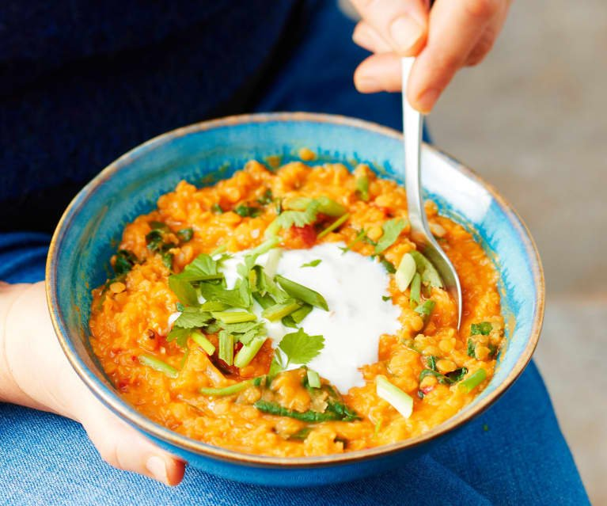

Dahl de lentilles corail, épinards et oignons verts
Ingredients
4×
- 1 oignon
- 2 gousses d'ail
- 2 cm de gingembre frais
- 1 piment rouge thaï
- 1 c. à s. d'huile de tournesol
- 1 c. à s. de pâte de curry indienne
- 350 g de tomates concassées
- 400 g d'eau
- 250 g de lentilles corail
- 100 g de pousses d'épinards
- sel
- poivre
- 1 yaourt nature
- 3 oignons verts
- brins de coriandre

Préparation
Étape 1
Mettre 1 oignon, 2 gousses d'ail, 2 cm de gingembre frais et les deux tiers d’1 piment rouge thaï épépiné dans le bol. Mixer 7 sec/vitesse 5.
Étape 2
Ajouter 1 c. à s. d'huile de tournesol et 1 c. à s. de pâte de curry indienne (ou curry en poudre). Rissoler 2 min/100ºC/vitesse 1.
Étape 3
Ajouter 350 g de tomates concassées, 400 g d'eau et 250 g de lentilles corail rincées. Cuire 18 min/100ºC/sens inverse/vitesse mijotage.
Étape 4
Ajouter 100 g de pousses d'épinards, sel et poivre. Cuire 3 min/100ºC/sens inverse/vitesse 2.
Étape 5
Servir avec 1 yaourt nature, 3 oignons verts émincés, quelques brins de coriandre et le reste du piment.
Conseils
- Si les lentilles ne sont pas assez cuites, rajouter un peu d’eau et prolonger quelques minutes.